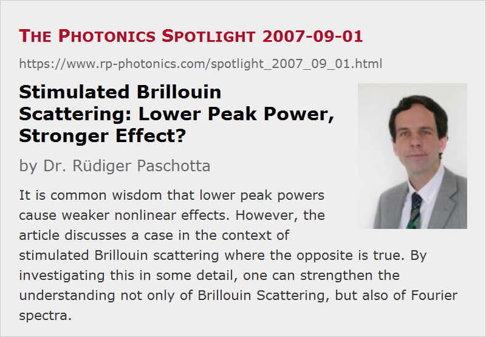

Stimulated Brillouin Scattering: Lower Peak Power, Stronger Effect?
Posted on 2007-09-01 as a part of the Photonics Spotlight (available as e-mail newsletter!)
Permanent link: https://www.rp-photonics.com/spotlight_2007_09_01.html
Author: Dr. Rüdiger Paschotta, RP Photonics Consulting GmbH
Abstract: It is common wisdom that lower peak powers cause weaker nonlinear effects. However, the article discusses a case in the context of stimulated Brillouin scattering where the opposite is true. By investigating this in some detail, one can strengthen the understanding not only of Brillouin Scattering, but also of Fourier spectra.

Ref.: encyclopedia articles on Brillouin Scattering, frequency combs, Fourier spectrum
Higher peak powers mean stronger nonlinear effects. Well, not always … and it is very instructive to investigate a case where it is not so. In that way, one can strengthen the understanding not only of Brillouin Scattering, but also of Fourier spectra. Furthermore, it becomes apparent that the idea of some threshold power, above which stimulated Brillouin scattering sets in, needs to be used with care.
Consider a regular train of ultrashort pulses with a pulse repetition rate of e.g. 1 GHz, as generated in a mode-locked laser. The Fourier spectrum of the pulse train is a frequency comb, consisting of narrow lines with a spacing identical to the repetition rate. We assume these pulses to propagate through a single-mode fiber, in which stimulated Brillouin scattering (SBS) occurs. That effect is often a great nuisance for people trying to send light through a fiber: above some threshold power, the fiber returns essentially all the power to the sender. (We'll actually need refine that statement, see below.)
In order to mitigate the problem, one may consider to double the pulse duration while keeping the average power and repetition rate constant. This reduces the peak power by a factor of 2, and according to common wisdom one might expect a reduction of nonlinear effects. However, the optical bandwidth is also reduced to one half, so that the power in each line of the spectrum is doubled. For that reason, SBS becomes stronger rather than weaker! What we can easily understand in the frequency domain, is puzzling when seen in the time domain.
We can resolve that. As a first step, we have to become aware that Brillouin scattering is a phenomenon where the effects of multiple pulses accumulate. That effect is the excitation of a sound wave in the fiber. The lifetime of the sound wave is of the order of several nanoseconds (the inverse Brillouin gain bandwidth), i.e., longer than the pulse spacing. Therefore, each pulse gives a further “kick” to the sound wave generated by the preceding pulses. For certain frequencies, spaced by the pulse repetition rate, these kicks lead to a resonant excitation. So we have a kind of oscillator (the sound wave), which gets some sharp kicks at regular time intervals, while the energy of the sound wave shows some partial decay between these kicks.
In a second step, we consider how strongly a single pulse of the pulse train contributes to the sound wave. The contribution to the amplitude of the sound wave is proportional to the electric field amplitude and to the pulse duration. (This is really as you would expect it for some simple mechanical oscillator.) If we double the pulse duration, the field amplitude is reduced only by a factor of the square root of two, because that corresponds to half the peak power. So the product of field amplitude and pulse duration is increased, even though the pulse energy stays constant! In fact, the energy added to the sound wave by one pulse is doubled.
A similar effect is obtained if we double the pulse repetition rate. While the contribution of each pulse to the sound wave amplitude is reduced by a factor of the square root of two, we have twice as many pulses per time interval, and overall a larger effect. In the frequency domain, we see an increased power per line due to a larger line spacing.
We should take this opportunity to revise our idea of a threshold power for SBS. It is not that there is a fixed threshold power which we can apply to short pulses as we do it for continuous-wave optical radiation. The threshold is rather associated with a certain power spectral density, which (for regular pulse trains) depends not only on the peak power, but also on pulse duration and repetition rate.
Finally, consider what happens if we reduce the pulse repetition rate further and further. This leads us into a regime where the sound wave totally decays between the pulses. There is then no resonant excitation any more. In the frequency domain, we have a pulse train with a small line spacing, so that multiple lines are within the Brillouin gain bandwidth. So it becomes obvious in both time and frequency domain that we have entered a different regime.
This article is a posting of the Photonics Spotlight, authored by Dr. Rüdiger Paschotta. You may link to this page and cite it, because its location is permanent. See also the RP Photonics Encyclopedia.
Note that you can also receive the articles in the form of a newsletter or with an RSS feed.
Questions and Comments from Users
Here you can submit questions and comments. As far as they get accepted by the author, they will appear above this paragraph together with the author’s answer. The author will decide on acceptance based on certain criteria. Essentially, the issue must be of sufficiently broad interest.
Please do not enter personal data here; we would otherwise delete it soon. (See also our privacy declaration.) If you wish to receive personal feedback or consultancy from the author, please contact him e.g. via e-mail.
By submitting the information, you give your consent to the potential publication of your inputs on our website according to our rules. (If you later retract your consent, we will delete those inputs.) As your inputs are first reviewed by the author, they may be published with some delay.
|  |
If you like this page, please share the link with your friends and colleagues, e.g. via social media:
These sharing buttons are implemented in a privacy-friendly way!